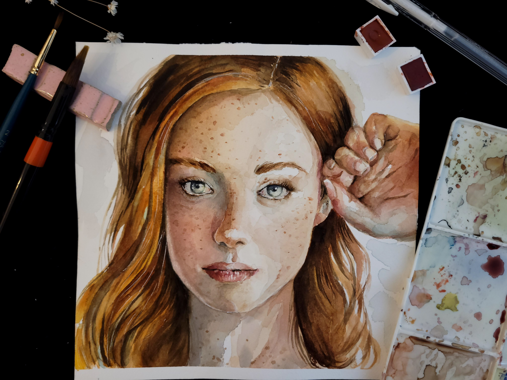
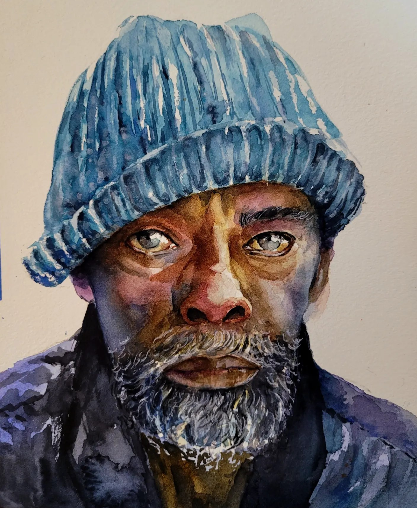

Sobre mim
Me chamo Cecília Girotti, tenho 28 anos, sou psicóloga clínica e, nas horas livres, me dedico ao aprendizado de artes em geral, sobretudo a aquarela. Nos últimos anos, busquei me aprimorar em diversas áreas que a pintura oferece, e me encontrei na criação de retratos, que vão desde reproduções realistas até elaborações subjetivas. Os retratos se tornaram uma janela para o universo do outro e um portal de acesso do outro para o meu olhar sobre o mundo e sobre as pessoas.
- 